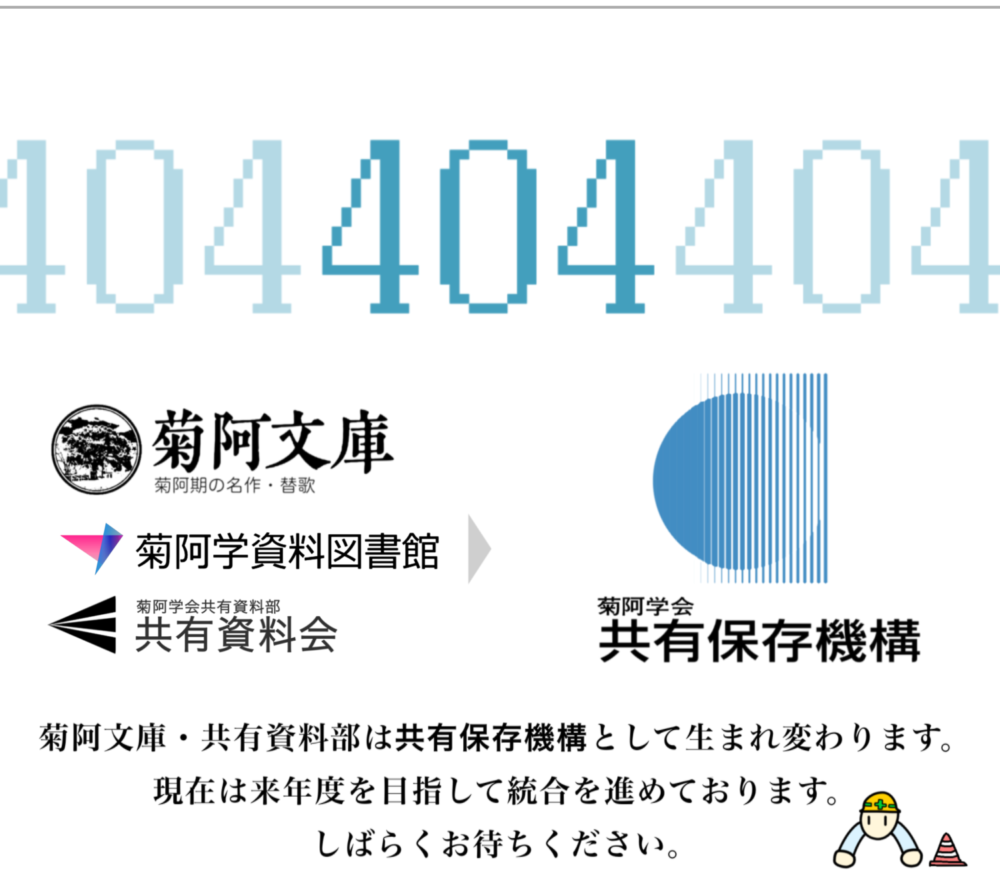
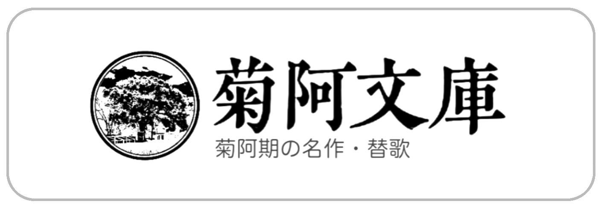
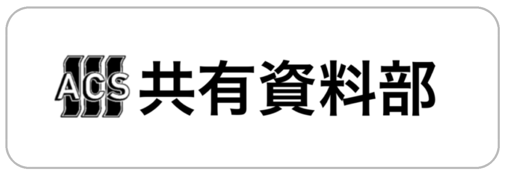

メニュー
学会について
資料提供について
広報
サイトマップ
資料図書館
機構組織
情報資料部
物的資料部
姉妹機構
菊阿学会
新菊阿辞典
菊阿百科
菊阿文庫
倫義協振会
関皇省
新着情報
2022年03月08日
資料を提供してくださる方を募集しています。詳しくは募集ページをご覧下さい。
2022年03月04日
更新情報
共有保存機構の頁を公開しました。
2022年02月02日
更新情報
菊阿文庫・菊阿学資料図書館・共有資料会は統合し、共有保存機構として営業します。
新着資料



頁上部へ戻る
学会について
❯
学会役務
❯
広報
❯
学位授与
❯
入退会について
❯
サイトマップ
© 2020 Avilogy Chrysanthelogy Society